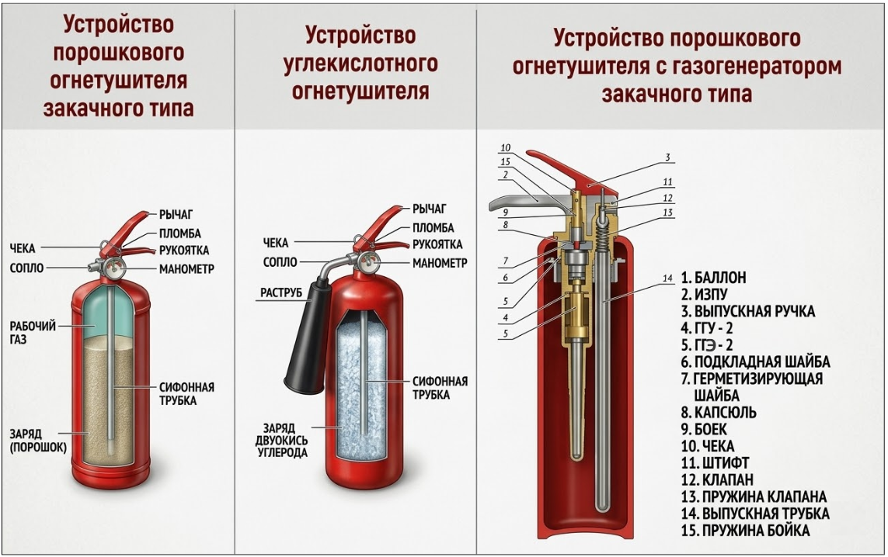
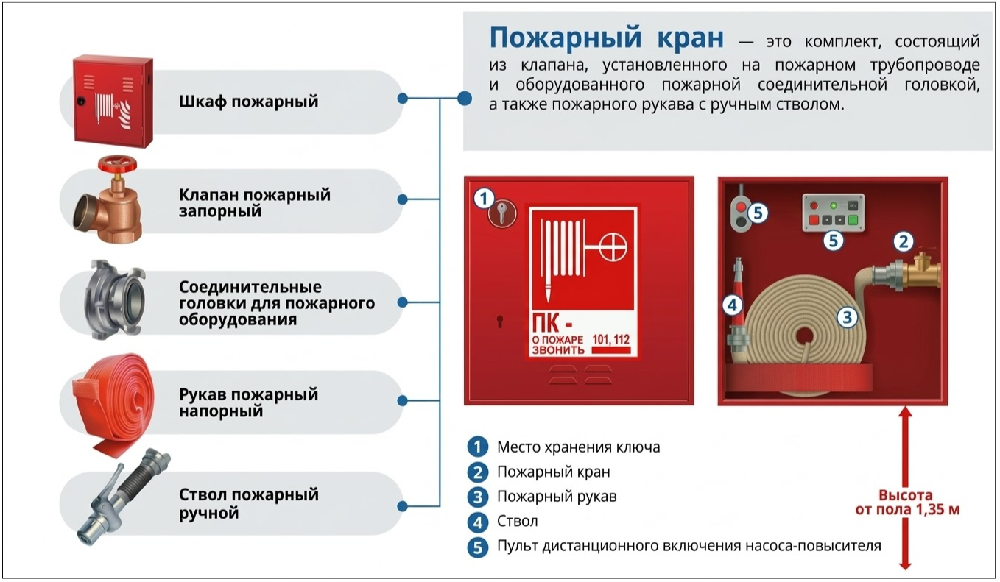
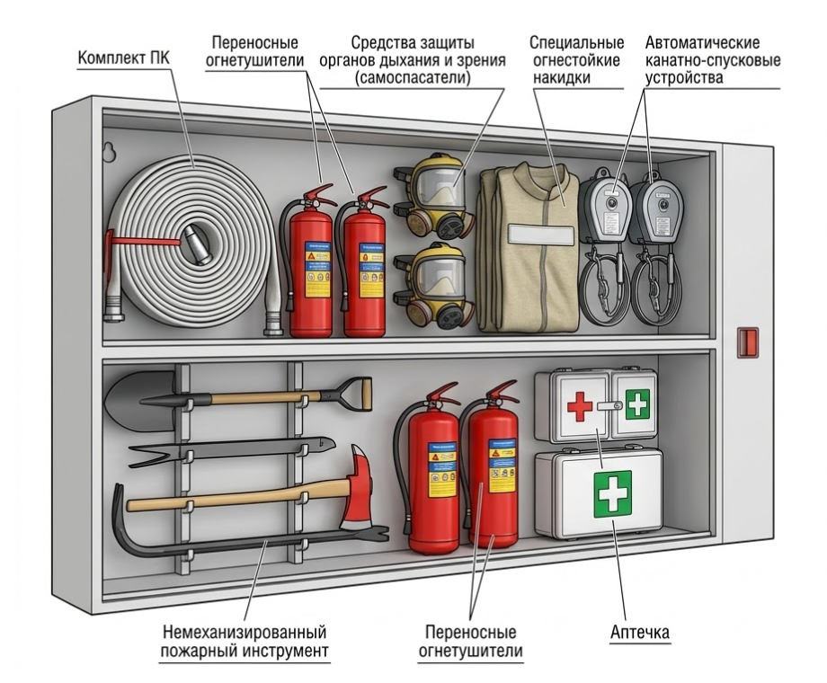

Как применять первичные средства пожаротушения
Знание "физики" пожара бесполезно, если под рукой нет нужного инструмента. Первичные средства — это устройства и материалы, которые позволяют локализовать или ликвидировать огонь на его начальной стадии. Как мы разобрали в прошлом уроке, у вас есть всего 10 минут, чтобы применить эти средства эффективно.

Первичные средства пожаротушения
Первичные средства пожаротушения — это устройства и материалы, предназначенные для локализации или ликвидации пожара на его начальной стадии.
Основные виды первичных средств пожаротушения:
Огнетушители
Огнетушитель — это переносное устройство для тушения пожара путем ручного выпуска огнетушащего вещества. Это наиболее массовое и доступное первичное средство пожаротушения. Оно может быть как классическим, автономным и автоматическим. От умелого применения огнетушителей и их эффективности зависит характер дальнейшего развития пожара и размер ущерба.
Скачайте наглядную инструкцию по применению огнетушителя из дополнительных материалов к уроку.
Рассмотрим самые применяемые типы огнетушителей и какие возгорания ими тушат:
Тип огнетушителя | Что тушит (Классы) | Особенности |
| ОВП (Воздушно-пенный) | Дерево, бумага, бензин, масло. | Запрещено тушить электрооборудование под напряжением. |
| ОП (Порошковый) | Почти все: твердые вещества, жидкости, газы. | Можно тушить электроустановки до 1000 Вольт. |
| ОУ (Углекислотный) | Электрооборудование, серверные. | Можно тушить под напряжением до 10 000 Вольт. Охлаждает зону горения. |
Огнетушители различаются не только по типу действующего вещества, но и по способу восстановления и конструктивным особенностям. Смотрите ниже в памятке подробную классификацию огнетушителей.
Устройство огнетушителя
Несмотря на разницу в типах ОТВ, большинство огнетушителей имеют идентичную конструкцию:
- Корпус (баллон).
- Запорное устройство.
- Сифонная трубка.
- Газовая трубка с аэратором (только в порошковых ОП).
- Источник давления.
- Предохранительный фиксатор (чека).
- Транспортировочный узел.

Практическая часть
Давайте сразу проверим, хорошо ли вы ориентируетесь в устройстве углекислотного огнетушителя. Нажмите на оранжевые точки и выберите правильное название детали.
Пожарные щиты (ПЩ)
Устанавливаются на стройплощадках и территориях предприятий, где нет внутреннего или наружного противопожарного водопровода, а также если здания удалены от водоемов. В зависимости от типа защищаемого объекта в состав ПЩ могут входить первичные средства пожаротушения, немеханизированные инструменты и инвентарь.
Попробуете определить название инвентаря на пожарном щите ниже? Если затрудняетесь ответить, положитесь на свою инженерную интуицию, она не подведет!
Задавались ли вы когда-нибудь вопросом, почему пожарное ведро имеет форму конуса? За этой странной, на первый взгляд, геометрией стоит четкий технический расчет. Ответ смотрите в интерактивной карточке ниже.
Пожарные краны и шкафы (ШП)
Пожарный кран — это специальное устройство, которое помогает тушить пожар. Оно состоит из клапана, который крепится к трубе, и специальной головки. К крану также прикреплен длинный рукав с наконечником.
Чтобы потушить пожар, нужно взять рукав, направить его на огонь, открыть кран и пустить воду. Обычно пожарные краны хранятся в специальных шкафах. В них же лежат и другие предметы, которые помогают тушить пожар. Какие именно — смотрите на рисунке:

Классификация пожарных шкафов:
- ШП-К: только для пожарного крана.
- ШП-О: только для огнетушителей.
- ШП-К-О: для крана и огнетушителей одновременно.
- ШПМИ (многофункциональный): помимо ПК и огнетушителей содержит средства защиты (самоспасатели), огнестойкие накидки, аптечку, спасательные устройства для спуска с высоты и немеханизированный инструмент.

Практическая часть
Теперь давайте закрепим общий материал урока в ситуативном тесте. Представьте себя участником событий в каждом сценарии и выберите наиболее верный и безопасный алгоритм действий согласно правилам пожарной безопасности.
Огнетушитель в руках профессионала — это шанс спасти имущество, но грамотный план эвакуации — единственный способ гарантированно спасти жизни. Когда звучит пожарная тревога, у людей нет времени на раздумья, они действуют на инстинктах. Задача инженера — сделать так, чтобы эти инстинкты привели их к безопасности, а не в тупик.
В следующем уроке мы разберем требования к планам эвакуации и поймем, почему «короткий» путь не всегда означает «безопасный».
{kind=link}
{kind=link}
{kind=link}